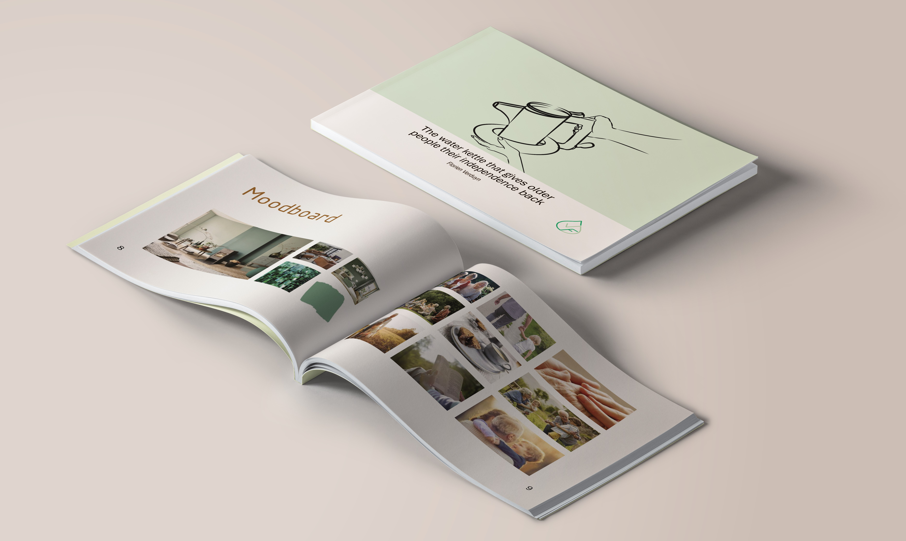
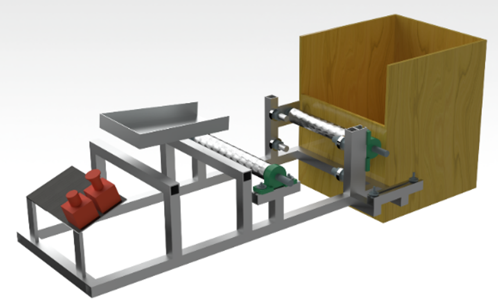
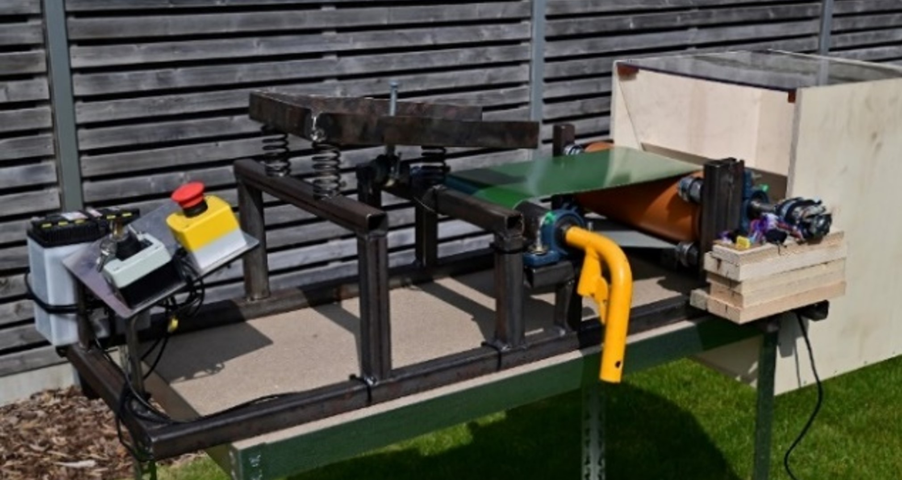
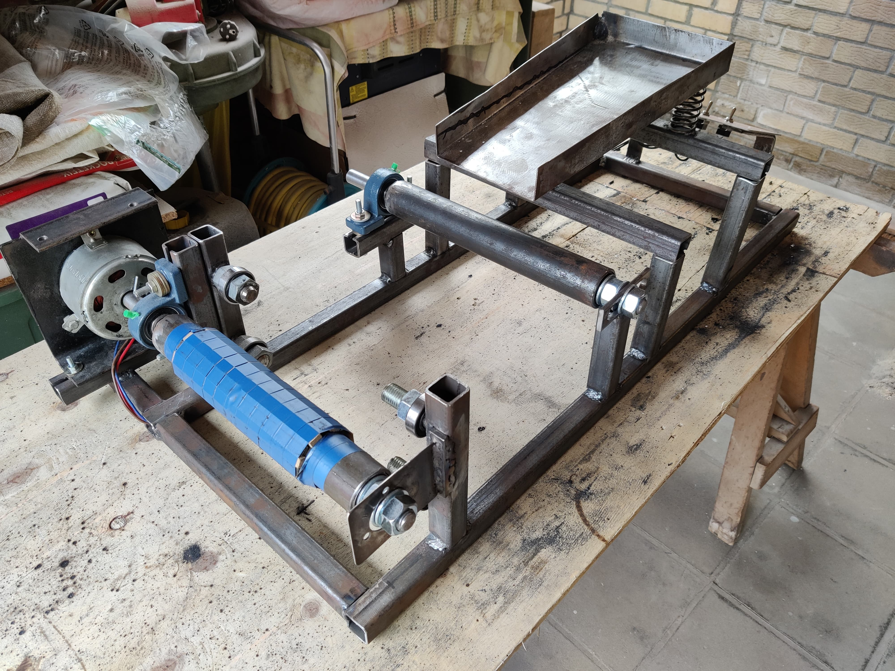
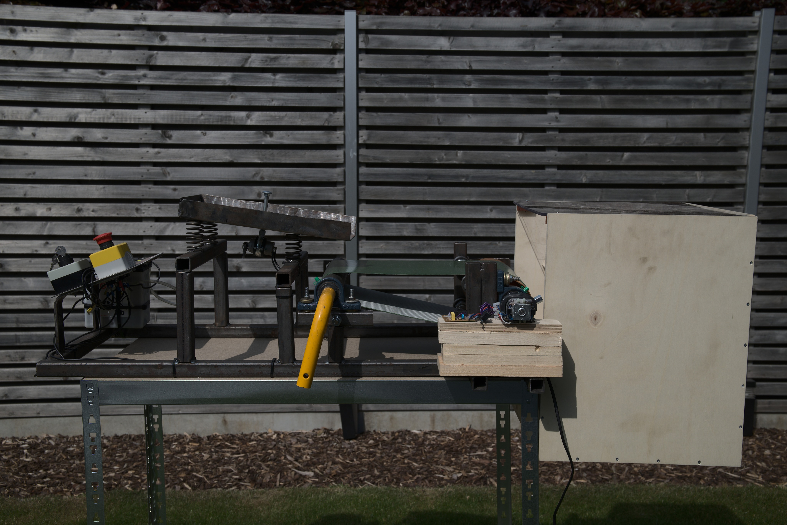
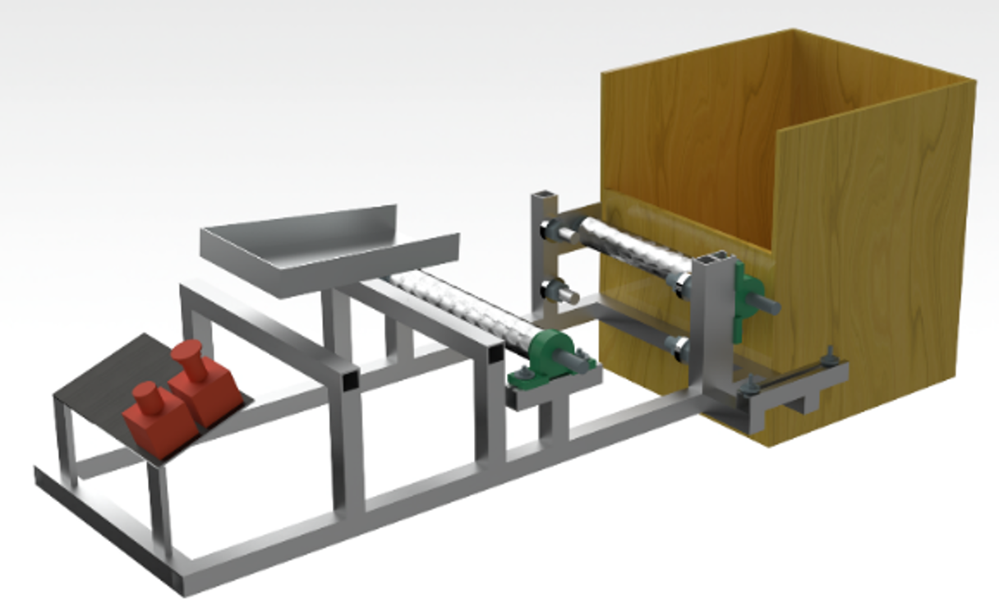
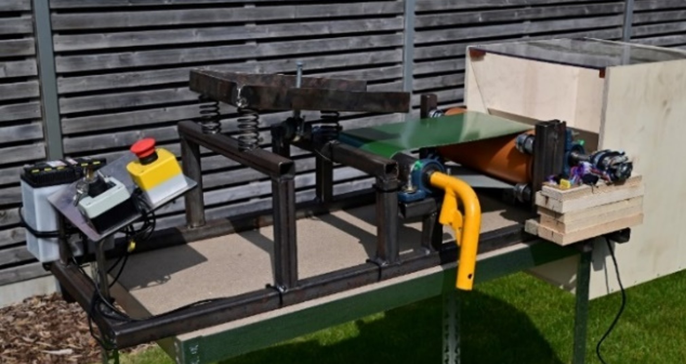
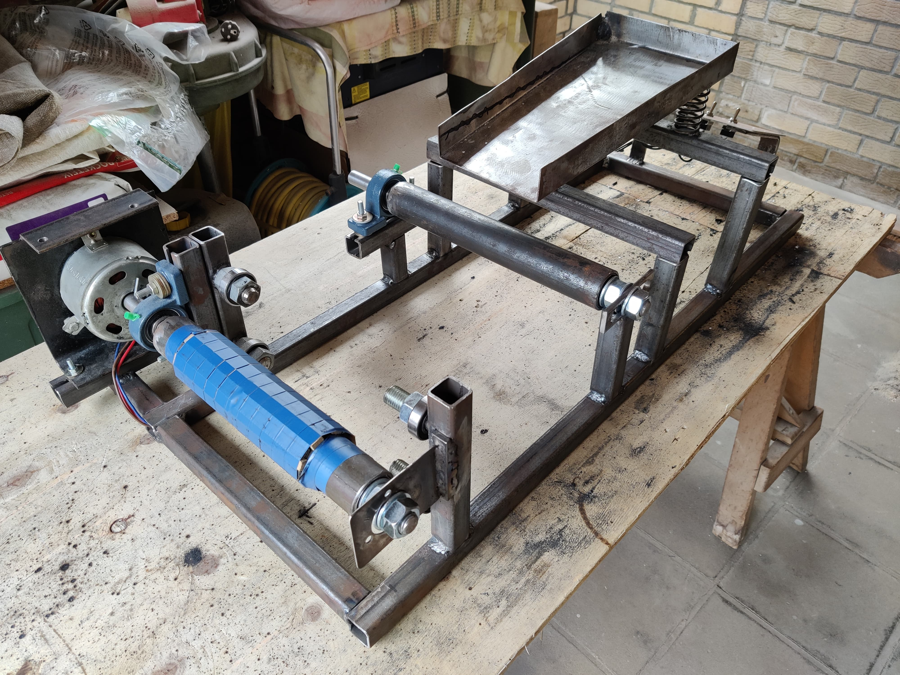
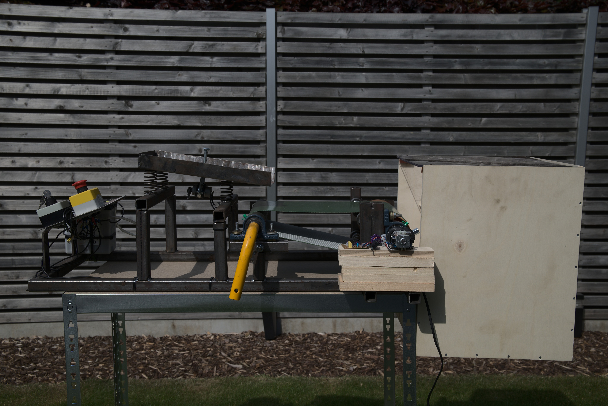

Florien Verduyn
Portfolio Website
CVAbout

Hi there! My name is Florien Verduyn and I'm studying Industrial Design at Ugent University. I am passionate about design and I'm constantly learning and growing in my understanding of the principles, techniques, and technologies used in the field.
Feel free to take a look at my portfolio website and as you browse through it, you'll find a collection of projects that I've worked on, each one representing a unique challenge that I was excited to tackle.
Graphic Design
For my first project, I designed a water kettle that helps older people who have arthritis. I was responsible for conceiving, prototyping, and refining this design to meet the needs and preferences of the target audience. For the course Graphic Design, we made an industrial design portfolio about this project, which is a great tool to visualise the work of an industrial designer and to develop more communication skills to convey a message and connect with an audience.
You can view this portfolio by clicking on the following link or view some example pages in the photos.

Visualization techniques

.jpg)

Engineering project
For this engineering project, we needed to develop a system that could separate plastic and aluminum. Therefore we used eddy current separation. This works by inducing an electrical current in a conductive material, such as aluminum. The current creates a magnetic field around the material that creates a force that repels the material away from the source of the magnetic field.
This project required not only a lot of research, but also extensive testing and optimization to achieve a system that is as efficient and effective as possible. I also learned a lot about the importance of finding sustainable solutions for things that already exist.
 






